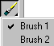
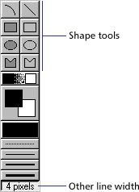
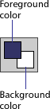
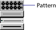
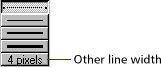
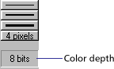
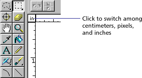
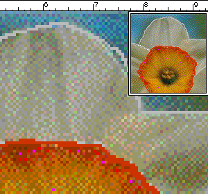

Using Director > Vector Shapes and Bitmaps > Using the Paint window > Using Paint window tools and controls
Using Director > Vector Shapes and Bitmaps > Using the Paint window > Using Paint window tools and controls |
Using Paint window tools and controls
If you see an arrow in the lower right corner of a tool, click it and hold down the mouse button to display a pop-up menu of options for that tool.

To select an irregular area:
Click the Lasso tool in the Paint window and drag to enclose the pixels you want to select.
|
|
The Lasso selects only those pixels of a color different from the color the Lasso was on when you first started dragging it. |
|
Press Alt (Windows) or Option (Macintosh) while dragging to create a polygon selection. Every time you click, you create a new angle in the selection polygon. |
|
Click the Lasso tool and hold down the mouse button to choose new settings from the pop-up menu. |
|
See Using the Lasso tool. |
To select a rectangular area:
Click and drag the Marquee tool in the Paint window.
|
|
Double-click the Marquee tool to select the entire bitmap. |
|
Click the Marquee tool and hold down the mouse button to choose new settings from the pop-up menu. |
|
To change the location of the registration point:
Click the Registration Point tool and click the spot where you wish to set the registration point.
|
|
Double-click the Registration Point tool to set the registration point in the center of the image. |
|
To erase:
Click and drag the Eraser tool to erase pixels.
|
|
Double-click the Eraser tool to erase the cast member. |
To move the view of the Paint window:
Click and drag the Hand tool to move the visible portion of the image within the Paint window.
|
|
Shift-drag to move straight horizontally or vertically. |
Press the Spacebar to temporarily activate this tool while using other paint tools.
To zoom in or out on an area:
Click the Magnifying Glass tool and click in the Paint window to zoom in. Shift-click to zoom out.
See Zooming in and out in the Paint window.
To select a color in a cast member:
Click the Eyedropper tool and do one of the following:
Click a color to select it as the foreground color. |
|
Shift-click a color to select it as the background color. |
|
Alt-click (Windows) or Option-click (Macintosh) to select the destination color for a gradient. |
Press D to temporarily activate the Eyedropper while using other paint tools.
To fill all adjacent pixels of the same color with the foreground color:
Click the Bucket tool and click the area you want to fill.
|
|
To open the Gradient Settings dialog box, double-click the Bucket tool. |
To enter bitmap text:
Click the Text tool and then click in the Paint window and begin typing.
|
|
Choose character formatting with the Modify > Font command. |
Bitmap text is an image. Before you click outside the text box, you can edit text you've typed by using the Backspace key (Windows) or Delete key (Macintosh). Once you have clicked outside the text box, you cannot edit or reformat bitmap text.
To draw a 1-pixel line in the current foreground:
Click the Pencil tool and drag in the Paint window. To constrain the line to horizontal or vertical, Shift-Click and drag.
If the foreground color is the same as the color underneath the pointer, the Pencil tool draws with the background color.
To spray variable dots of the foreground color:
Click the Airbrush tool and drag in the Paint window.
|
|
Click the Airbrush tool and hold down the mouse button to choose a new brush type from the pop-up menu. Choose Settings to change the selected brush. |
To brush strokes of the foreground color:
Click the Brush tool and drag in the Paint window. To constrain the stroke to horizontal or vertical, Shift-click and drag.
|
To choose a new brush type:
Click the Brush tool and hold down the mouse button to choose a new brush type from the pop-up menu. Choose Settings to change the selected brush.
See Using the Brush tool.
To paint shapes or lines:
Click and drag the shape tools. To constrain lines to horizontal or vertical, ovals to circles, and rectangles to squares, Shift-click and drag.

The filled tools create shapes filled with the foreground color and the current pattern. The thickness of lines is determined by the line width selector.
To choose a foreground and destination color for color-shifting inks:
Click the color box on the left to choose a foreground color; click the color box on the right to choose a destination color.
These colors affect Gradient, Cycle, and Switch inks. Each of these uses a range of colors that shifts between the foreground color and the destination color.
See Using gradients and Using Paint window inks.
To choose the foreground and background colors

:Use the Foreground Color pop-up menu to choose the primary fill color (used when the pattern is solid and the ink is Normal). |
|
Use the Background Color pop-up menu to choose the secondary color (the background color in a pattern or text). |
To choose a pattern for the foreground color:
Choose an option from the Patterns pop-up menu:

To change the pattern palette, choose Pattern Settings at the bottom of the menu. |
|
To define a tile—a pattern based on a rectangular section of an existing cast member—choose Tile Settings. |
See Editing patterns and Creating a custom tile.
To choose a line thickness:

Choose the None, One-, Two-, or Three-Pixel Line button to set the line width. |
|
Double-click the Other Line Width button to open Paint Window Preferences and assign a width to the line. |
To change the color depth of the current cast member:

Double-click the Color Depth button to open the Transform Bitmap dialog box.
The button displays the color depth of the current cast member.
See Changing size, color depth, and color palette for bitmaps.
To choose a Paint window ink:
Choose the type of ink from the Ink pop-up menu at the bottom left of the window.
You use the Lasso tool to select irregular areas or polygons. Once selected, artwork can be dragged, cut, copied, cleared, or modified with the effects on the Paint toolbar. The Lasso tool selects only those pixels of a color different from the color the Lasso tool was on when you first started dragging it. You use the Lasso pop-up menu to change settings.
To select an irregular area with the Lasso tool:
Drag with the Lasso tool to enclose the pixels you want to select.
To select a polygon area with the Lasso tool:
1 |
Press Alt (Windows) or Option (Macintosh) while clicking the first point. |
2 |
Click the remaining points. |
3 |
Double-click the last point. |
To change Lasso tool settings:
1 |
Hold down the mouse button while the pointer is on the Lasso tool. |
2 |
Choose one of the following options from the Lasso pop-up menu: |
Shrink causes the lasso to tighten around the selected object so that only the object is selected. |
|
No shrink permits you to select the entire area you drag around. The lasso selects whatever is inside the selected area. |
|
See Thru Lasso causes your selection to become transparent, as if the Transparent ink effect were applied. |
|
The Marquee tool selects artwork in the Paint window. Once selected, artwork can be dragged, cut, copied, cleared, or modified with the commands on the Paint toolbar. Use the Marquee pop-up menu to change settings.
To select with the Marquee tool:
Drag to select a rectangular area.
To select the entire bitmap:
Double-click the Marquee tool.
To stretch or compress art that is selected with the Marquee tool:
Hold down Control (Windows) or Command (Macintosh) while dragging a border of the selected area. Hold down Shift at the same time to maintain proportions.
To move a selection, do any of the following:
Click and drag the selection. |
|
Shift-drag to constrain the movement to horizontal or vertical. |
|
Use the arrow keys to move the selection one pixel at a time. |
To make a copy of artwork that is selected with the Marquee tool:
Hold down Alt (Windows) or Option (Macintosh) while dragging the selection.
To change marquee settings:
Click the Marquee tool, hold down the mouse button, and choose from the following options:
Shrink causes the rectangle to shrink around the selected artwork. |
|
No Shrink permits you to select everything within the marquee. |
|
Lasso tightens the marquee around the object in the same way as the Lasso tool and selects the pixels according to the color of the pixel beneath the cross hair when you started your drag. |
|
See Thru modifies the selection function so that pixels with the same color as the first pixel selected are not included in the selection. |
The Airbrush tool sprays the currently selected color, ink, and fill pattern. To modify the spray, you choose the ink effects from the Ink pop-up menu in the Paint window. The longer you hold the Airbrush tool in one spot, the more it fills in the area.
If you hold down the mouse button when the pointer is positioned on the Airbrush tool, the Airbrush pop-up menu appears. Each of the five settings in the pop-up menu can be defined so you can have several types of spray available without opening the Airbrush Settings dialog box.
To use the Airbrush tool:
Click the Airbrush tool and drag in the Paint window.
To define airbrush settings:
1 |
Click the Airbrush tool and hold down the mouse button. |
2 |
Choose the menu item for which you want to define settings. |
3 |
Open the menu again and choose Settings from the Airbrush pop-up menu. Enter values for the options in the Airbrush Settings dialog box. |
You can also double-click the Airbrush tool to open the Airbrush Settings dialog box. |
|
4 |
Use the Flow Rate slider to control how quickly the airbrush covers an area with paint. To change the flow, drag the Flow Speed slider. |
5 |
Use the Spray Area slider to set the size of the airbrush's spray area. |
6 |
Use the Dot Size slider to set the size of the dots sprayed by the airbrush. |
7 |
Use Dot Options to specify how dots are sprayed from the airbrush: |
Uniform Spray causes drops sprayed by the airbrush to be uniformly sized. |
|
Random Sizes sprays with randomly sized drops. |
|
Current Brush sprays with drops shaped like the current airbrush. |
|
You use the Brush tool to brush strokes with the current color, ink, and fill pattern. To choose a different size and brush shape, you use the Brush Settings dialog box. The choices you make in the Brush Settings dialog box are assigned to the menu item in the pop-up menu and remain in effect until you change them. Each of the five settings in the pop-up menu can be defined so you can have several types of spray available without opening the Brush Settings dialog box.
To use the Brush tool:
Click the Brush tool and drag in the Paint window.
To change brush settings:
1 |
Click the Brush tool and hold down the mouse button. |
2 |
Choose the menu item for which you want to define settings. |
3 |
Open the menu again and choose Settings from the Brush pop-up menu. Enter values for the options in the Brush Settings dialog box. |
You can also double-click the Brush tool to open the Brush Settings dialog box. |
|
4 |
To choose from the default brush shapes, choose Standard from the pop-up menu and then click a brush shape below. |
5 |
To create a new brush shape, choose Custom from the pop-up menu and then choose a brush shape to modify below. |
6 |
Edit the current brush shape by clicking the magnified image of the brush shape. Clicking a blank pixel fills it, and clicking a filled pixel makes it blank. Clicking outside the Brush Shapes dialog box places the pixels on the screen at the point you click. Use the following editing controls to change the brush shape: |
The right and left arrows move the brush shape one pixel to the right or left. |
|
The up and down arrows move the brush shape up or down one pixel. |
|
The black and white square reverses the colors of the brush shape (for example, black becomes white and white becomes black). |
|
Copy copies the brush shape to the Clipboard. |
|
Paste pastes the brush into the custom set of brush shapes. |
|
Using rulers in the Paint window
The Paint window has vertical and horizontal rulers to help you align and size your artwork.

To hide or show the rulers in the Paint window:
Choose View > Rulers.
To change the location of the zero point, do one of the following:
Drag along the ruler at the top or side of the window. |
|
Drag into the window to align the zero point with a specific point in the cast member. |
Zooming in and out in the Paint window
You can use the Magnify tool or the Zoom commands on the View menu to zoom in or out at four levels of magnification.
To zoom in or out, do one of the following:
Click the Magnify tool and then click the image. Click again to increase the magnification. Shift-click to zoom out. |
|
Choose View > Zoom and then choose the level of magnification. |
|
Press Control + the plus (+) key (Windows) or Command + the plus (+) key (Macintosh) to zoom in, or Control + the minus (-) key (Windows) or Command + the minus (-) key (Macintosh) to zoom out. |
|
Control-click (Windows) or Command-click (Macintosh) the image to zoom in on a particular place.
 |
To return to normal view, do one of the following:
Click the normal-sized image in the upper right corner. |
|
Choose View > Zoom > 100%. |